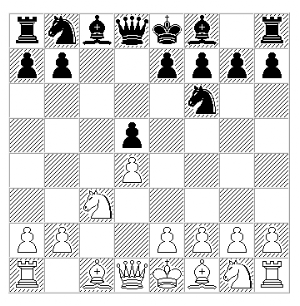
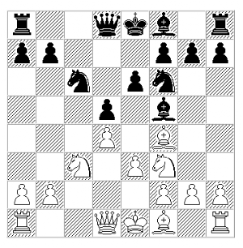

Overview of Variations
Created Saturday 13 January 2018
The overview below is a summary of the various options in the opening - taken from the main games that we analyzed.
Slav Exchange - Overview
- d4 d5 2. c4 c6 3. Nc3 Nf6 4. cxd5

( 4. Nf3 Bf5 5. Qb3 Qb6 6. Qxb6 axb6 7. cxd5 Nxd5 8. Nxd5 cxd5 9. e3 Nc6 10. Bd2 Bd7 11. Be2 e6 12. O-O Bd6 13. Rfc1 Ke7 14. Bc3 Rhc8 15. a3 Na5 16. Nd2 f5 17. g3 b5 18. f3 Nc4 19. Bxc4 bxc4 =+ and Black went on to produce a great example of the Slav Endgame - 0-1 Janowski,D-Capablanca,J/New York 1916 )
- ... cxd5
- Nf3
( 5. Bf4 a6 ( 5. ... Qb6 6. e3 Nc6 7. Bd3 Bg4 8. Nge2 e6 9. O-O a6 10. Na4 Qa7 11. Qb3 b5 12. Rfc1 Rc8 13. Rc2 Be7 14. Rac1 Qb7 15. Nc5 Bxc5 16. Rxc5 Nd7 17. R5c3 Bxe2 18. Bxe2 O-O 19. a4 b4 20. Bd6 Qb6 21. Bxb4 +- 1-0 Grischuk,A-Kamsky,G/Moscow 2013 ) ( 5. ... Nc6 6. e3 a6 7. Bd3 g6 8. h3 Bf5 9. Nf3 Bxd3 10. Qxd3 Bg7 11. O-O O-O 12. Rfc1 e6 13. Na4 Ne4 14. Nc5 Nxc5 15. Rxc5 Qd7 16. Rac1 Rfc8 17. a3 Bf8 18. R5c2 f6 19. Nd2 Bd6 20. Bxd6 Qxd6 21. Nb3 Rc7 22. Na5 Rac8 23. Nxb7 Rxb7 24. Qxa6 +/- 1-0 Kramnik,V-Aronian,L/Istanbul TUR 2012 ) 6. Nf3 ( 6. e3 e6 7. Bd3 Be7 8. Rc1 O-O 9. g4 Nc6 10. g5 Nd7 11. Nf3 += 1-0 Vaisser, A - Collins, D, 1994 ) 6. ... Nc6 7. Ne5 Qb6 8. Nxc6 bxc6 9. Qd2 Bf5 10. f3 e6 11. e3 Nd7 12. Rc1 Be7 13. Be2 O-O 14. O-O Rfc8 15. a3 Qb7 16. Na4 c5 17. dxc5 Bxc5 18. Nxc5 Nxc5 19. Qb4 Qxb4 20. axb4 Nd3 =+ 0-1 Wojtkiewicz,A-Shirov,A/Manila olm 1992 )
- ... Nc6 6. Bf4
( 6. e3 a6 7. Ne5 e6 8. f4 Bd6 9. Bd3 Ne7 10. O-O b5 11. Bd2 Bb7 12. Rc1 O-O 13. Bb1 Rc8 = 0-1 Matlak,M-Dreev,A/ 1995 )
- ... Bf5
( 6. ... Nh5 7. Be5 ( 7. Bd2 e6 8. e3 Bd6 9. Rc1 O-O 10. Be2 Nf6 11. O-O Ne4 12. Be1 f5 13. Nd2 Qf6 14. Ndxe4 fxe4 15. f4 Bd7 16. g3 Kh8 17. h4 h6 18. Kg2 g5 =+ 0-1 Votava,J-Morozevich,A/BL 1999 ) 7. ... e6 8. e3 Be7 9. Bd3 O-O 10. Rc1 Bd7 11. O-O f6 = 0-1 Allen,K-Volkov,S/Monarch Assurance 9th 2000 )
( 6. ... a6 7. Rc1 ( 7. e3 Bg4 8. Bd3 e6 9. h3 Bh5 10. Rc1 Bd6 11. Bxd6 Qxd6 12. O-O O-O 13. Be2 Rac8 14. Ne1 Bxe2 15. Qxe2 Nd7 16. Nd3 Nb4 17. Nxb4 Qxb4 =+ 0-1 Huebner,R-Georgiev,K 1997 ) 7. ... Bf5 8. e3 e6 ( 8. ... Rc8 9. Be2 e6 10. O-O Be7 11. Qb3 Na5 12. Qa4+ Nc6 13. Bxa6 Ra8 14. Bxb7 Rxa4 15. Bxc6+ Kf8 16. Nxa4 Ne4 17. Bb7 Nd6 18. Bxd6 Qxd6 19. Rc6 Qd7 20. Rc8+ Bd8 21. Ne5 1-0 Kramnik,V-Anand,V/Moscow 2007 ) 9. Qb3 Ra7 10. Be2 Nd7 11. O-O Be7 12. Na4 g5 13. Be5 Rg8 14. Bg3 h5 15. Nc5 Nxc5 16. dxc5 h4 17. Bd6 Bg4 18. h3 Bxf3 19. Bxf3 f5 20. Bh5+ Kf8 21. e4! +/- 1-0 Milov,V-Piket,J/Groningen 1998 )
( 6. ... Qa5 7. e3 Ne4 8. Qb3 e6 9. Bd3 Bb4 10. Rc1 Nxc3 11. bxc3 Ba3 12. Rb1 b6 13. e4 dxe4 14. Bb5 Bd7 15. Nd2 a6 16. Bxc6 Bxc6 17. Nc4 Qf5 18. Bd6 e3 19. Nxe3 Qxb1+ 20. Qxb1 Bxd6 21. Qxb6 +- 1-0 Botvinnik,M-Denker,A/radio 1945 )
- e3 e6

- Bb5
( 8. Ne5 Nd7 9. Nxc6 bxc6 10. Rc1 Be7 11. Be2 O-O 12. O-O c5 13. Nb5 a6 14. Nd6 Bg6 15. dxc5 Nxc5 16. Rxc5 Bxd6 17. Bxd6 Qxd6 18. Qd4 Rfd8 19. Rfc1 e5 20. Qd2 d4 21. Rc6 Qe7 22. Rxa6 Rab8 23. exd4 exd4 24. Ra3 Qb4 25. Rd1 d3 26. Qxb4 Rxb4 27. f3 Kf8 28. Rdxd3 Bxd3 29. Bxd3 Rxb2 -/+ 0-1 Andersson,U-Gligoric,S/Niksic 1983 )
- ... Bd6
( 8. ... Bb4 9. Ne5 Qa5 10. Bxc6+ bxc6 11. O-O Bxc3 12. bxc3 Qxc3 13. Qc1 Qxc1 14. Rfxc1 O-O 15. f3 h6 16. Nxc6 Rfe8 17. a4 Nd7 18. Bd6 Nb6 19. Bc5 Bd3 20. Nxa7! Rxa7 21. Bxb6 Ra6 22. a5 +- 1-0 Botvinnik,M-Tal,M/Moscow 1961 )
- Ne5 Rc8 10. Bxc6+ bxc6 11. O-O O-O 12. Rc1 Qe7 13. Na4 Bxe5 14. Bxe5 Nd7 15. Nc5 f6 16. Bg3 e5 17. Qd2 Nb6 18. b3 e4 19. Na6 h5 20. Qb4 Qb7 21. Nc5 Qe7 22. a4 g5 23. a5 Na8 24. Na6 Qe8 25. Rc2 h4 26. Bd6 Rf7 27. Rfc1 Rg7 28. Nb8 +-
1-0 Kasparov,G-Dolmatov,S/USSR (ch) 1979